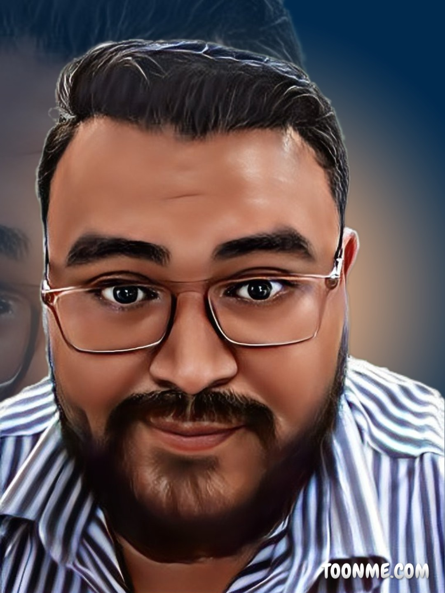

Sobre mim
- Sou autodidata e estudante contínuo de Programação, buscando como objetivo me tornar um Dev Full Stack com foco no Front-end.
Tenho conhecimentos em HTML, CSS, JavaScript e um pouco de MySQL
, tenho também uma boa lógica de programação.
Possuo o perfil Colaborativo, Evolutivo, com bom humor, ótimo relacionamento interpessoal e orientação para obter resultados.
Formação
- Bacharelado em Administração com ênfase em administração da Tecnologia – Universidade
Estácio de Sá - previsão de conclusão 2022.
Cursos
- Regex – Da introdução a Aplicação – 3 Horas/Udemy.
- PHP7 – Conhecendo a Linhagem, POD, Banco de Dados, Try Catch, Templates (RainTPL),
Diretórios Virtuais com Apache, Slim Framework, Security in PHP7, Projetos E-commerce,
Administração e Site, Instalação de MySQL – 32 Horas/Udemy.
- Python – do Básico a Aplicação – 20 Horas/Udemy.
- HTML 5; CSS 3; Javascript – Introdução a Tecnologia – 10 Horas/IFPA.
- HTML; CSS; JS – introduzindo animações e responsividade – 32 Horas/Udemy.